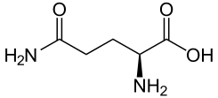

La glutamina (abreviada Gln o Q, y con frecuencia nombrada como L-glutamina) es uno de los 20 aminoácidos que intervienen en la composición de las proteínas y que tienen codones referentes en el código genético; es una cadena lateral de una amida del ácido glutámico, formada mediante el reemplazo del hidroxilo del ácido glutámico con un grupo funcional amina. Está codificada en el ARN mensajero como 'CAA' o 'CAG'. Se trata de un aminoácido no esencial, lo que significa que el organismo puede sintetizarlo a partir de grupos amino presentes en los alimentos. Se trata del aminoácido más abundante en los músculos humanos (llegando a casi el 60% de los aminoácidos presentes) y está muy relacionado con el metabolismo que se realiza en el cerebro.
| Simbolo de una letra | Simbolo de dos letras | Imagen del aminoàcidos |
|---|---|---|
| Q | Gln |  |
Informacìon obtenida desde la pagina Wikipedia